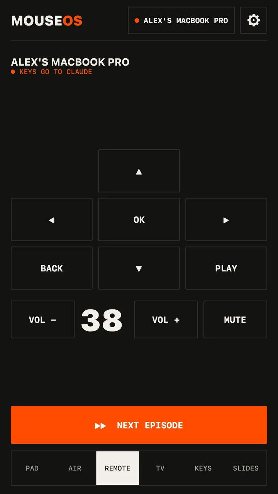

Guide · Linux · X11 · Wayland
Your phone as a mouse for Linux — Wayland included
Most phone-mouse apps stop at X11. MouseOS drives GNOME and KDE Plasma on Wayland too: trackpad, air mouse, keyboard and media keys, from an Android phone, over your network.


Install
- Download the .deb (Ubuntu, Debian, Mint) or the .rpm (Fedora, openSUSE) and install it with your package manager.
- Open MouseOS. On Wayland, click ALLOW CONTROL and enter your password once (details below). On X11 there's nothing to allow.
- Open MouseOS on the phone, same network. Click ALLOW on the computer for that phone. Done.
How it works on each session
| Session | How input gets in |
|---|---|
| X11 | XTest — pointer, buttons, both scroll axes, Unicode typing in any layout. |
| Wayland | A virtual mouse and keyboard through uinput, seen by the compositor like real hardware. ALLOW CONTROL runs one pkexec step that adds a udev rule tagging /dev/uinput with uaccess — access for the signed-in user only — and loads the module at boot. |
Want to do it by hand instead? The app shows the three commands it would run. Volume goes through PipeWire or PulseAudio; media keys reach whatever player is in front.
Network
- Clicks, keys and status: WebSocket on TCP 53317. Pointer and scroll: UDP 53318, accepted only from a phone you allowed.
- Discovery: mDNS plus a UDP beacon — no IP to type. If your firewall blocks it, open those two ports for your LAN, or type the address the app shows.
- No server, no account, no telemetry. Nothing leaves your network.